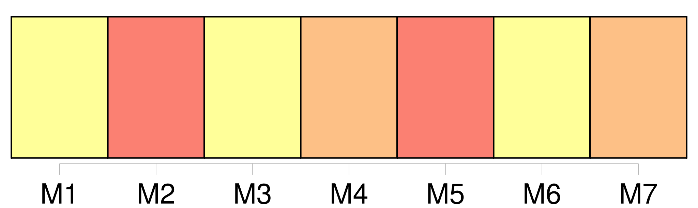

Longueur nb maillons : 12 mentions |
  |
[Les actes respectueux] , s'il en a été fait ; [203 phrases]
Les enfans de famille ayant atteint la majorité fixée par l'article 148, sont tenus, avant de contracter mariage, de demander, par [un acte respectueux et formel] , le conseil de leur père et de leur mère, ou celui de leurs aïeuls et aïeules, lorsque leur père et leur mère sont décédés, ou dans l'impossibilité de manifester leur volonté. [3 phrases]
Depuis la majorité fixée par l'article 148, jusqu'à l'âge de trente ans accomplis pour les fils, et jusqu'à l'âge de vingt-cinq ans accomplis pour les filles, [l'acte respectueux prescrit par l'article précédent] , et sur [lequel] il n'y aurait pas de consentement au mariage, sera renouvelé deux autres fois, de mois en mois ; et un mois après le troisième acte, il pourra être passé outre à la célébration du mariage. [1 phrases]
Après l'âge de trente ans, il pourra être, à défaut de consentement sur [un acte respectueux] , passé outre, un mois après, à la célébration du mariage. [1 phrases]
[L'acte respectueux] sera notifié à celui ou ceux des ascendans désignés en l'article 151, par deux notaires, ou par un notaire et deux témoins ; et, dans le procès-verbal qui doit [en] être dressé, il sera fait mention de la réponse. [1 phrases] En cas d'absence de l'ascendant auquel eût dû être fait [l'acte respectueux] , il sera passé outre à la célébration du mariage, en représentant le jugement qui aurait été rendu pour déclarer l'absence, ou, à défaut de ce jugement, celui qui aurait ordonné l'enquête, ou, s'il n'y a point encore eu de jugement, un acte de notoriété délivré par le juge de paix du lieu où l'ascendant a eu son dernier domicile connu. [4 phrases]
Lorsqu'il n'y aura pas eu d' [actes respectueux] , dans les cas où [ils] sont prescrits, l'officier de l'état civil qui aurait célébré le mariage, sera condamné à la même amende, et à un emprisonnement qui ne pourra être moindre d'un mois. [1 phrases]
Les dispositions contenues aux articles 148 et 149, et les dispositions des articles 151, 152, 153, 154 et 155, relatives à [l'acte respectueux] [qui] doit être fait aux père et mère dans le cas prévu par ces articles, sont applicables aux enfans naturels légalement reconnus. |
La ressource peut être téléchargée sur la page Ortolang
Si vous avez des questions ou vous voyez des erreurs, merci d'envoyer un mail à silvia.federzoni89@gmail.com
Site développé par S. Federzoni (contact)